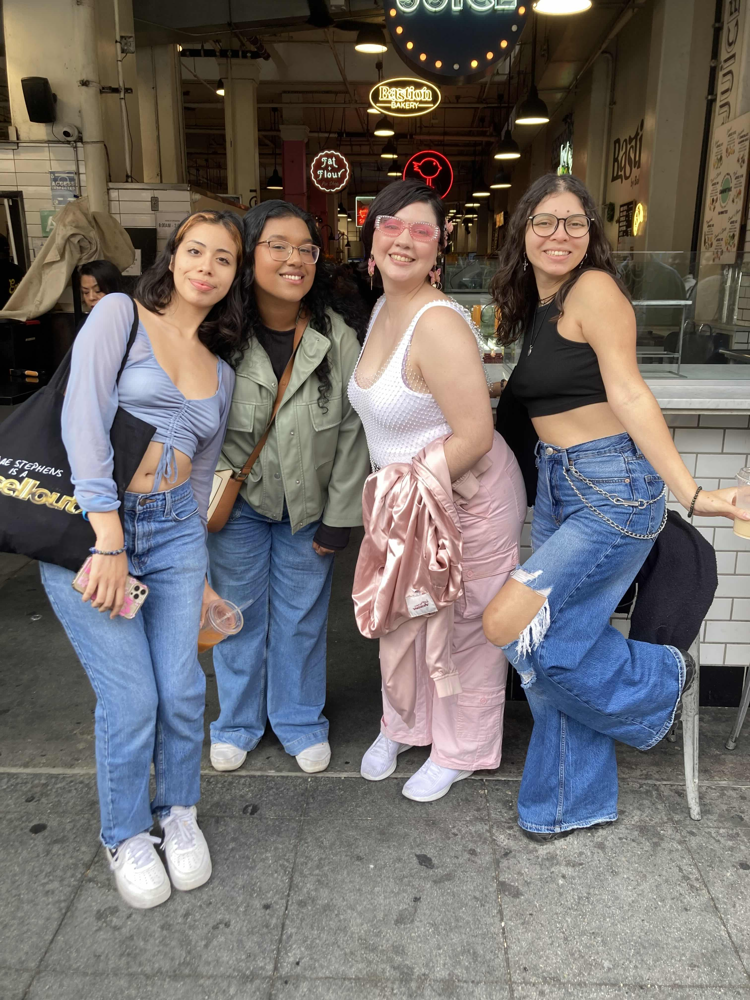
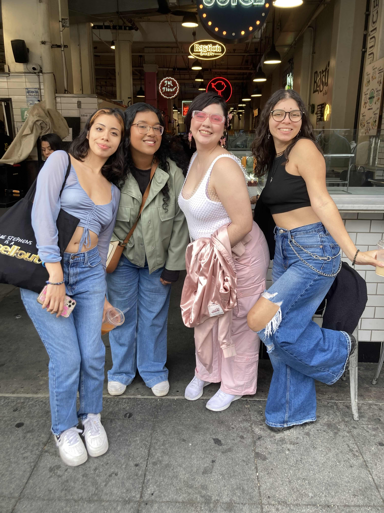

Hikes
Explore weekly hikes across Orange County and Southern California—scenic trails, great company, and adventure starting right from UCI.
Fostering a sense of community while making nature as accessible as possible!
Check out some of the photos taken by our members:
Explore weekly hikes across Orange County and Southern California—scenic trails, great company, and adventure starting right from UCI.


 

Adventure isn't just limited to nature. Join us on a city exploration day, try new food, explore museums, feel the rush of the city.
Every quarter the club goes on a weekend long retreat which is always the highlight of the quarter for many of our members. Past retreat locations include:
- Josuha Tree National Park
- Red Rock Canyon State Park & Las Vegas
- Lake Arrowhead
- Sequoia National Park
- Death Valley National Park & Las Vegas

Our primary form of communication is on our club Discord server, and we also promote all our events on the AAC official Instagram page.
 Join Discord
Join Discord
 Follow on Instagram
Follow on Instagram